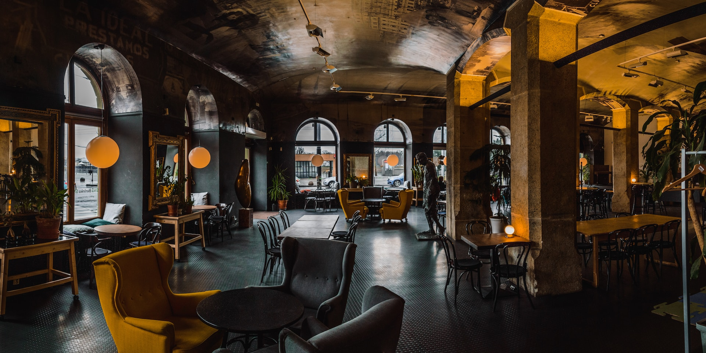

Enchanted Bites Café

Photo by
Sebastian Schuppik
on
Unsplash
Enchanted Bites Café is a whimsical and magical dining destination that combines gourmet cuisine with an
enchanting atmosphere. It's a place where fairy tales come to life, and every dish is crafted with a
touch of magic.
Enchanted Bites Café is a hidden gem that truly transported me to a fairy tale realm. The moment I walked in, I felt like I was in a storybook world. The decor is spellbinding, and the food is nothing short of magical. The Pixie Pasta fluttered on my taste buds, and the Unicorn Elixir left me feeling rejuvenated. If you're looking for an unforgettable dining experience, Enchanted Bites is the place to be!